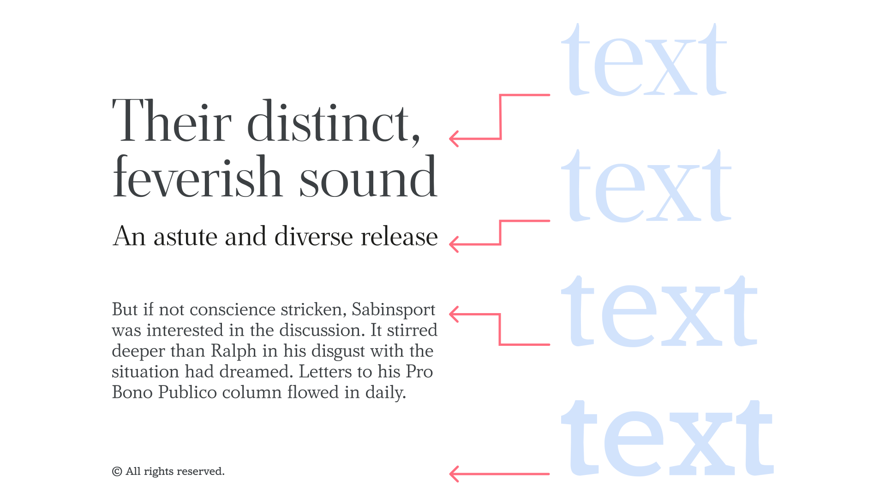

Optical sizes
By Google Fonts Knowledge contributors · Google Fonts Knowledge.
Original article · Source on GitHub · CC BY-SA 4.0. Text, illustrations and existing credits reproduced from the licensed Knowledge repository. Open Shelf adapted the layout and links; these adaptations are also CC BY-SA 4.0. No endorsement implied.
Optical sizes are different versions of a typeface optimized for use at specific sizes or size ranges.

On the left, text set in four different optical sizes—display, subhead, body, and caption—at the intended font sizes for each. On the right, all set at the same font size.
Small (or body) optical sizes tend to have:
than those of their large (or display) counterparts. Different optical sizes can be split into separate font files or be assigned to the optical size axis within a variable font.